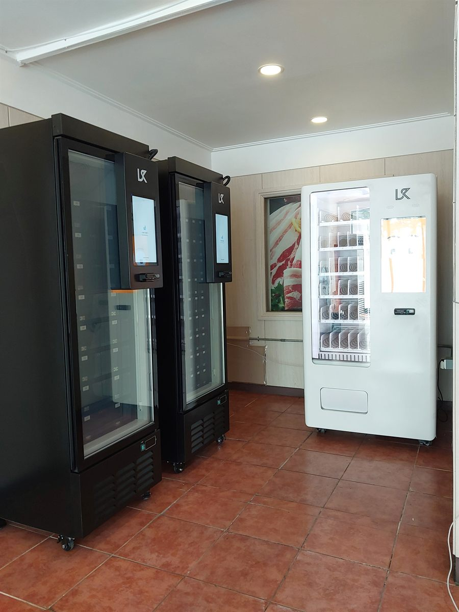

서초구 무인자판기 설치
무인매장 냉장·스낵 자판기 3대

무인매장은 자판기를 보조로 두는 곳이 아니라 자판기가 곧 매장인 곳입니다. 다른 업종에서는 기계 한 대가 잘 안 나가면 품목만 바꾸면 되지만, 무인매장은 기계가 멈추면 그날 문을 닫은 것과 같습니다. 그래서 이런 자리는 처음부터 계산이 다릅니다. 한 대를 크게 넣을지, 성격이 다른 여러 대를 나눌지를 먼저 정하고 그 다음에 품목을 짭니다.
이번 서초구 현장은 길가에 면한 작은 점포였습니다. 안으로 깊이가 있고 폭이 좁은 구조라, 벽 한 면에 기계를 일렬로 몰면 반대쪽이 통로만 남고 손님이 등을 보이며 지나가게 됩니다. 그래서 두 벽으로 나눠 ㄱ자로 세웠습니다. 들어오자마자 오른쪽이 먼저 눈에 들어오고, 몇 발 더 들어가야 안쪽 냉장 두 대가 보이는 순서가 됩니다.
서초구 무인매장 자리에 맞춘 구성
기계는 냉장 두 대, 상온 한 대로 나눴습니다. 무인매장에서 냉장을 두 대까지 늘린 이유는 단순합니다. 상온 품목은 편의점과 값으로 겨루기 어렵지만, 도시락·샐러드·유제품처럼 차게 보관해야 하는 것들은 늦은 시간에 대체할 곳이 마땅치 않습니다. 이 점포가 노린 자리도 그쪽이었습니다. 냉장 기종은 문을 여닫는 방식이 아니라 화면에서 고르면 해당 칸만 열리는 구조라, 사람이 오래 들여다봐도 안쪽 온도가 크게 오르지 않습니다.
상온 기종에는 음료와 과자, 간편식을 섞어 넣었습니다. 무인매장은 한 가지만 사러 오는 손님이 드물어서, 냉장에서 하나 고른 사람이 오는 길에 하나 더 집게 만드는 배치가 중요합니다. 결제는 세 대 모두 카드와 간편결제로 통일했고 현금함은 넣지 않았습니다. 무인으로 도는 매장에서 현금은 관리 부담만 늘어납니다. 재고와 각 기계의 온도는 사장님 휴대폰에서 한 화면으로 봅니다.
- 기종 — 냉장 스마트 기종 2대(안쪽 벽) + 상온 스낵·간편식 기종 1대(맞은편 벽)
- 냉장 — 도시락·샐러드·유제품 등 늦은 시간에 살 곳이 마땅치 않은 품목 중심
- 상온 — 음료·과자·간편식을 섞어 한 번에 두 개 집게 하는 구성
- 결제·관리 — 카드·간편결제 전용, 현금함 없음, 재고와 온도 원격 확인
무인매장으로 돌려 보니 좋았던 점과 손이 가는 점
좋은 쪽은 여는 시간이 없다는 것입니다. 사람을 두지 않으니 새벽과 심야가 그대로 영업 시간이 되고, 이 시간대는 주변에 문 연 곳이 적어 경쟁이 약합니다. 좁은 점포라도 매대 대신 기계를 세우니 공간이 남고, 바닥이 비어 있어 청소도 금방 끝납니다. 손님 입장에서도 계산대 앞에서 기다릴 일이 없습니다.
손이 가는 쪽도 솔직히 적겠습니다. 첫째, 냉장은 상온보다 보충이 잦습니다. 유통기한이 짧은 품목을 넣으면 그만큼 자주 들러야 하고, 안 팔린 것은 버리게 됩니다. 처음에는 종류를 욕심내지 말고 확실히 나가는 서너 가지로 시작해 늘리는 편이 낫습니다. 둘째, 무인이라도 완전히 손을 떼지는 못합니다. 결제 오류나 상품 걸림은 원격으로 확인되지만 현장 조치는 사람이 해야 합니다. 셋째, 심야에 문이 열려 있는 공간이라 CCTV와 조명은 따로 챙기셔야 합니다. 기계 자체는 카드 전용이라 현금 피해는 없지만, 공간 관리는 별개 문제입니다.
서초구, 이런 자리가 잘 됩니다
서초구는 업무지구와 주거지가 한 구 안에서 확실히 갈리는 곳입니다. 서초동과 반포동 일부는 법조·업무시설이 밀집해 평일 낮 유동이 강하고, 잠원동과 반포동 아파트 권역은 저녁과 주말에 생활 동선이 살아납니다. 방배동은 주택가 골목 상권이 촘촘하고, 양재동은 도로변 상업시설과 사무실이 섞여 있습니다. 우면동과 내곡동 쪽은 연구·업무단지와 신규 주거지가 함께 있어 낮과 밤의 성격이 또 다릅니다.
무인매장으로 볼 때는 밤에도 사람이 다니는 길이면서, 그 블록에 늦게까지 문 연 가게가 적은 자리가 맞습니다. 아파트 단지 상가 입구, 오피스텔 1층, 역에서 주거지로 빠지는 이면도로가 그렇습니다. 반대로 대형 편의점이 바로 옆에 붙어 있거나, 밤 아홉 시면 사람이 끊기는 순수 업무 블록은 냉장을 채운 만큼 회수가 안 됩니다.
서초구 서비스 지역
서초동 · 반포동 · 방배동 · 잠원동 · 양재동 · 우면동 · 내곡동 · 염곡동 · 신원동 · 원지동
서초구 전역에서 방문 상담이 가능합니다. 맞닿은 강남구·동작구·관악구·송파구도 같은 담당자가 함께 다닙니다. 지역별 안내는 서초구 무인자판기 설치 안내 페이지에서 보실 수 있습니다.
서초구 무인자판기, 이렇게 시작하시면 됩니다
전화나 상담 신청으로 점포 주소만 남겨 주시면 됩니다. 담당자가 나가서 벽면 길이와 천장 높이, 콘센트 위치와 용량, 문에서 들어오는 동선을 확인합니다. 무인매장은 냉장 기계가 여러 대 들어가면 전기 용량을 먼저 봐야 하는 자리라, 기종을 정하기 전에 이 부분을 확인합니다. 구성과 설치일이 정해지면 끝이며, 설치비는 받지 않습니다. 기계는 구입·렌탈·임대 중에서 고르실 수 있습니다.
점포 면적이 아주 좁거나 전기 용량이 모자라면 냉장 대수를 줄이고 상온 위주로 시작하시라고 말씀드립니다. 무인매장은 처음부터 크게 벌리는 것보다 확실히 나가는 품목을 확인한 뒤 대수를 늘리는 순서가 안전합니다.
※ 사진은 픽프리가 시공한 설치 사례이며, 글에 적힌 지역의 현장 사진은 아닙니다.
함께 많이 찾는 키워드
서초구 무인자판기 · 서초구 자판기 설치 · 서초구 자판기 임대 · 서초구 자판기 렌탈 · 서울 무인자판기 · 서울 자판기 설치 · 서초동 자판기 · 반포동 자판기 · 방배동 자판기 · 잠원동 자판기 · 양재동 자판기 · 우면동 자판기 · 내곡동 자판기 · 염곡동 자판기 · 신원동 자판기 · 무인매장 자판기 · 무인점포 자판기 · 24시간 무인매장 · 냉장 자판기 · 도시락 자판기 · 간편식 자판기 · 스낵 자판기 · 스마트 자판기 · 카드 자판기 · 무인키오스크 설치 · 자판기 설치비용 · 자판기 원격관리 · 무인매장 창업